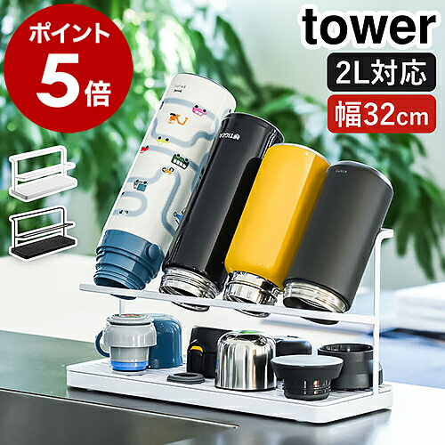

キッチン
水切りラックのおすすめ3選と選び方｜設置場所で選ぶコツ
2026-11-16

※本記事には商品プロモーション(アフィリエイト広告)を含みます【PR】
水切りラックは、乾かしたいものの大きさや設置スペース、耐荷重によって向いているタイプが異なります。ここでは、ボトル類の乾燥に向いた置き型タイプ、排水口の上に直接のせる省スペースな吸着タイプ、耐荷重や素材にこだわったステンレスタイプの3つを比較しながら、選び方のポイントを紹介します。
大きいボトルや水筒をまとめて乾かしたい人に
水切りラックを選ぶときにまず見ておきたいのが、何を乾かす用途で使うかという点です。マグボトルや水筒、哺乳瓶など細長い容器が多い場合は、通常の水切りラックでは収まりにくいことがあります。『水切りラック［ ワイドジャグボトルスタンド』は、ボトルを斜めに立て掛けて乾燥させる構造で、2Lサイズの大きいジャグボトルも2本並べて収納できる大きさが用意されています。マグボトルなど大きさの異なる水筒類やガラスジャーも一緒に乾燥できるほか、哺乳瓶スタンドとしても使える点が特徴です。スタンドと水切りトレーの2段構造になっており、トレー部分にはボトルのフタや飲み口、パッキンなどの細かいパーツを置いておけます。価格は3,850円で、レビュー件数は6,985件、平均評価4.77と、ボトル類の乾燥に特化したアイテムとして多くの人に選ばれていることがうかがえます。ボトル類の乾燥を主な用途にするなら、形状と収納力を重視して選ぶとよさそうです。

排水口の上に直接置く省スペース型
キッチンのスペースが限られている場合は、置き型スタンドではなく排水口の上に直接のせるタイプも選択肢になります。『キッチンドレインネオ 2 キッチンドレイン 正規品』は、折れにくさを高めるために中心軸の厚みを1.5倍にし、六角形構造と太めの金属芯で支える設計になっているタイプです。設置面積は以前のモデルの1/2以下で済むとされており、高密着タイプの吸着パッドも採用されているため、限られたスペースでも設置しやすい点が特徴です。生ごみを浮かせて捨てられるので衛生面でも扱いやすく、フレームを上げて省スペースにすることもできます。貼り直しも可能とされているため、設置場所を細かく調整したい人にも向いています。価格は1,980円と3商品の中では最も手に取りやすく、レビュー件数4,844件・平均評価4.65という結果からも、設置スペースを重視する人に選ばれやすいタイプだとわかります。

耐荷重と素材の作りを重視したい人に
乾かす食器の量が多い、またはキッチンに置いたときの見た目も重視したいという場合は、耐荷重や素材の作りを確認しておくと安心です。『ストロー整列！sakuraku 水切りラック』は、本体・脚部分に18-8ステンレスを使い、脚の滑り止めにはシリコーンゴムを採用したタイプです。耐荷重はレギュラーサイズで底面5kg、ワイドサイズで底面10kgとされており、サイズによって耐荷重が異なる点はあらかじめ確認しておきたいポイントです。ステンレス素材は見た目がすっきりしており、キッチンに置いたときの印象を重視する人にも選びやすい作りといえます。価格は6,500円で3商品の中では最も高めですが、レビュー件数4,817件・平均評価4.71という評価の高さからも、耐荷重や素材の作りを重視する人に支持されていることがわかります。設置の際は水平で安定した場所を選ぶことも大切なポイントです。

ボトルや水筒をまとめて乾かす収納力を重視するなら斜め収納タイプ、設置スペースの節約を重視するなら吸着式の省スペースタイプ、耐荷重や素材の作りを重視するならステンレス製タイプが向いています。


読み込み中...